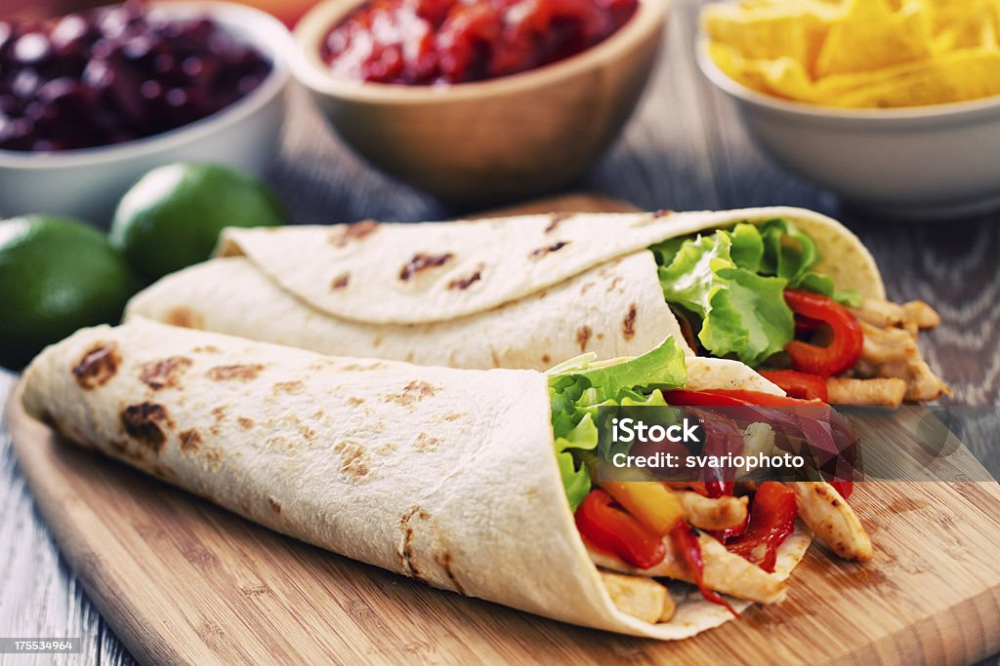

Chicken Fajita Wrap

Chicken Fajita Wraps are a Mexican dish with seasoned chicken, peppers, and onions in a tortilla, often with toppings like sour cream and salsa.
Ingredients
- Chicken breasts
- Bell peppers (varied colors)
- Onions
- Tortillas
- Olive oil
- Lime juice
- 5 cloves of garlic
- 10 ml cooking oil
- salt, black pepper, MSG, ground white pepper to taste
- Optional toppings: sour cream, salsa, guacamole, shredded cheese, lettuce
Fajita seasoning,combine:
- 1 tablespoon chili powder
- 1 teaspoon ground cumin
- 1 teaspoon paprika
- 1 teaspoon sugar
- 1/2 teaspoon garlic powder
- 1/2 teaspoon onion powder
- 1/2 teaspoon salt
- 1/2 teaspoon ground black pepper
- 1/4 teaspoon cayenne pepper (optional for heat)
Steps:
- Marinate Chicken: In a bowl, combine the chicken slices with olive oil, lime juice, and 2-3 tablespoons of the fajita seasoning. Mix well and let marinate for at least 30 minutes.
- Cook Chicken: Heat a skillet over medium-high heat. Add the chicken and cook until browned and cooked through. Remove from skillet and set aside.
- Cook Vegetables: In the same skillet, add a bit more oil if needed. Cook the onions and bell peppers until they're soft and slightly charred.
- Combine: Return the cooked chicken to the skillet with the vegetables, stir to mix well and heat through.
- Assemble Wraps: Warm the tortillas in a dry pan or microwave. Spoon the chicken and vegetable mixture onto each tortilla. Add toppings like sour cream, salsa, guacamole, cheese, or lettuce as desired.
- Serve: Fold the tortillas around the filling and serve hot. Enjoy!